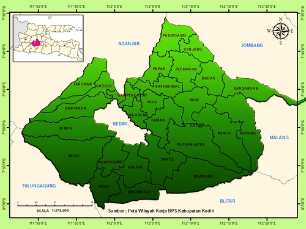
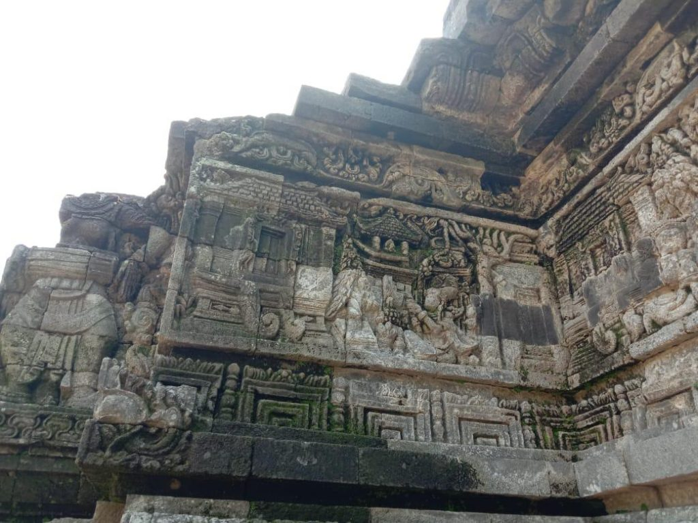
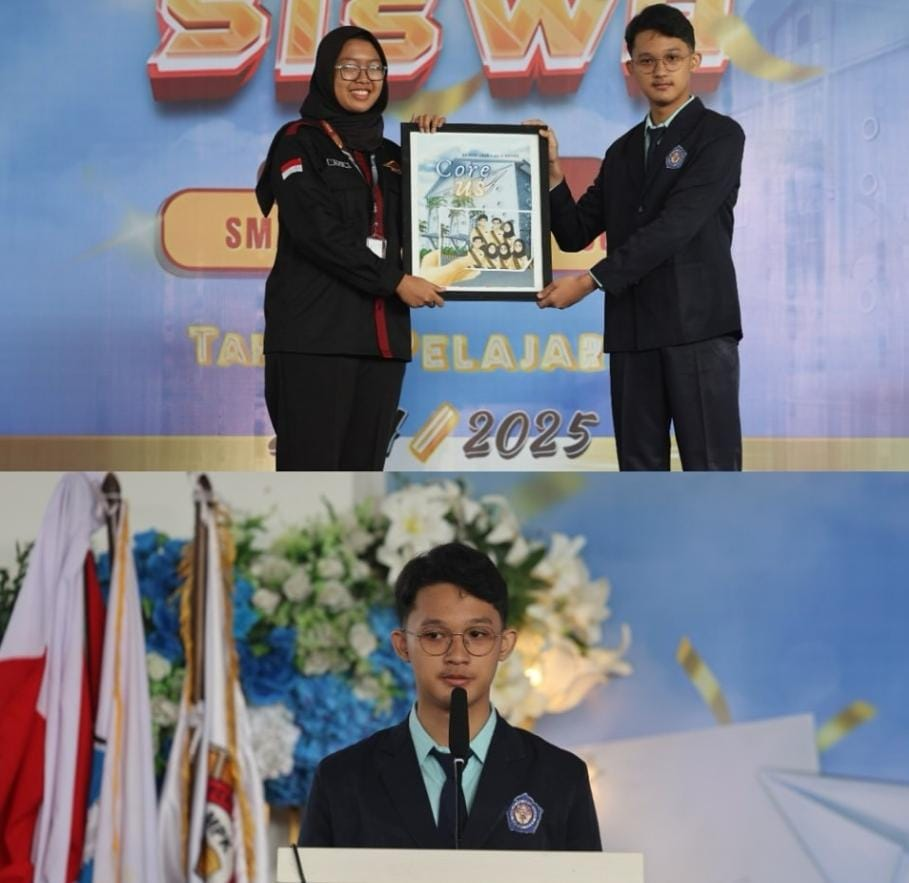

The Vibe
Terletak di jantung Jawa Timur, Kabupaten Kediri adalah wilayah di mana ketenangan alam dan kehidupan warganya berpadu dengan harmonis. Secara geografis, bentang alam Kediri dibelah oleh aliran Sungai Brantas yang bersejarah, serta dijaga oleh gagahnya Gunung Wilis di sisi barat dan Gunung Kelud di sisi timur. Kondisi alam ini tidak hanya menjadikan Kediri sebagai daerah agraris dengan hamparan persawahan hijau yang subur, tetapi juga menciptakan suasana lingkungan yang asri dan membumi. Kabupaten Kediri terdiri dari 26 kecamatan, 1 kelurahan, dan 343 desa, dengan luas wilayah 1.386,05 km². Jumlah penduduk Kabupaten Kediri pada pertengahan tahun 2024 sebanyak 1.688.468 jiwa.

The Heritage
Secara historis, Kabupaten Kediri tercatat sebagai salah satu wilayah dengan peradaban tertua di provinsi Jawa Timur. Daerah ini merupakan bekas pusat pemerintahan Kerajaan Kediri (Kadhiri) yang mencapai puncak kejayaannya pada abad ke-12, khususnya di era kepemimpinan Raja Jayabaya. Pada masa tersebut, Kediri tidak hanya berfungsi sebagai pusat kekuatan politik, tetapi juga bertransformasi menjadi salah satu episentrum perdagangan dan peradaban terbesar di Nusantara. Berasal dari wilayah dengan fondasi sejarah yang begitu panjang memberikan saya apresiasi mendalam terhadap daerah yang kaya akan warisan budaya dan kemegahan masa lampau ini.

What Kediri Means to Me
Aku lahir dan tumbuh di Kabupaten Kediri. Tapi Kediri bukanlah sekedar tempat bertumbuhku, namun juga sebuah tempat yang mengantarkanku hingga di titik ini. Dengan sejarahnya yang hebat, budaya yang anggun, dan ekosistem masyarakat yang ramah dan sopan membuatku nyaman untuk berkembang. Kediri juga merupakan tempatku pulang. Berbeda dengan keras dan padatnya kehidupan di Surabaya, Kediri dapat menjadi tempatku mengambil nafas dan menenangkan diri kembali. Meskipun kemegahan dan modernnya kehidupan Kediri tidak seunggul Surabaya, namun Kediri tetap menjadi tempat terbaik dalam hidupku, kapanpun itu.